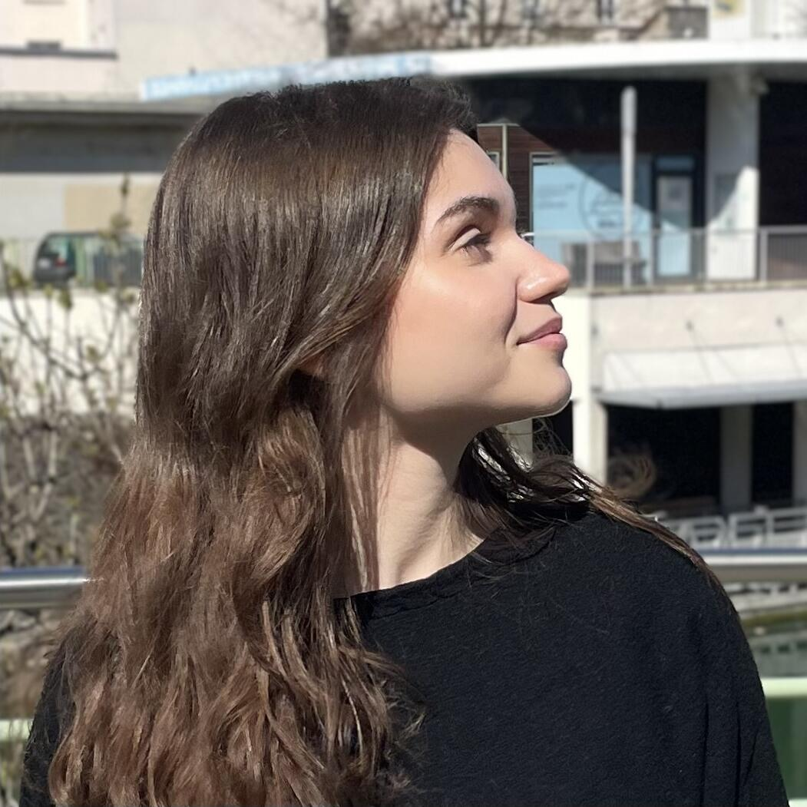

The result of my work on the COMIC project has finally been published in ISME Communications.

Juliette Audemard
PhD Student
juliette.audemard@ec-nantes.fr
Hello :)
I'm a PhD student at Ecole Centrale Nantes, and in the VELO team of the LS2N lab. My work focuses on the use of inductive logic programming for the inference of hospital-acquired pneumonia biomarkers, under the supervision of Morgan Magnin (Pr, HDR) and Tony Ribeiro (Dr). This PhD is funded by the European Homi-Lung project.
I'm passionate about systems biology, a huge scrabble enthusiast (I can beat your grandma) and I sketch in my free time.